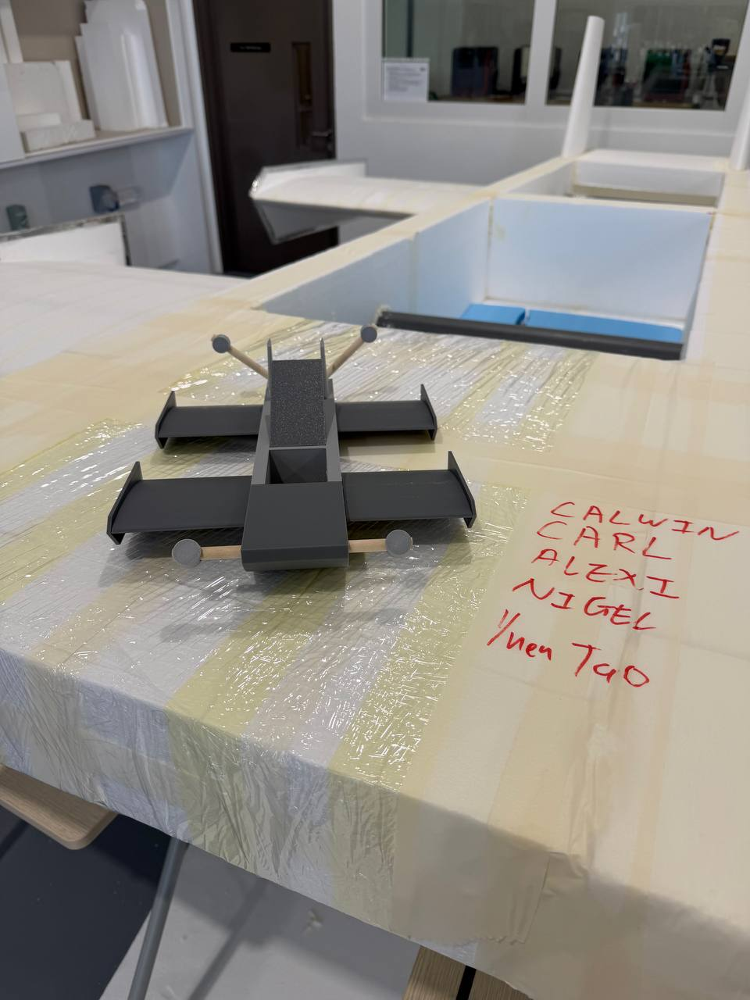
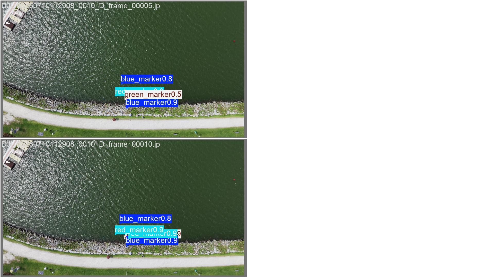

Projects
A few highlights of what I’m building and contributing to.
FWISH — Water Takeoff Flying Craft
- Concept: A craft that can take off from water like a jet ski and transition into flight.
- Progress: Built physical prototypes for design validation and presentation.
- Next Steps: Develop the flying prototype once funding is approved (airframe + propulsion + control testing).


SAFMC — Drone Swarm Flocking
- Challenge: Build autonomous behavior for a 3-drone team that could coordinate flocking, positioning, and validation in a controlled environment.
- Action: Developed and tested Python/ROS 2/MAVROS/MAVLink flight functions, integrated UWB indoor positioning with the flight controller, and processed UWB data for hover and navigation workflows.
- Result: Produced a tested autonomous drone pipeline for non-GPS positioning experiments, improving reliability through ROS 2 communication and flight-controller debugging.
RobotX — UAV Autonomy & Multi-Robot Systems
Challenge
RobotX requires a UAV autonomy stack that can work as part of a multi-domain robotics system, coordinating aerial, marine, and underwater mission components while remaining testable before field deployment.
Action
- Lead UAV software and hardware integration for autonomous mission operations.
- Develop Gazebo simulation environments to validate flight missions before field testing.
- Implement ROS 2, MAVROS, ArduPilot, and MAVLink functions for takeoff, altitude hold, waypoint navigation, and mission execution.
- Build communication pipelines between the UAV, autonomous surface vehicle, and ground station for real-time monitoring.
- Train and test YOLOv11 models on aerial imagery for buoy, boat, and coloured-marker detection.
- Develop hard-negative and human-rejection workflows to reduce false detections in shoreline scenes.
- Prototype surface-condition inspection and map camera detections to grid coordinates for radio transmission.
- Prepare the perception pipeline for deployment on Jetson Orin and integration with autonomous mission guidance.
Result
The ongoing work is creating a deployable UAV autonomy stack that connects simulation, perception, flight control, onboard compute, communications, and field validation into one mission-ready system.
View the documented RobotX drone vision code, training workflows, and detection cases.
Development Evidence
The following outputs document model training and prototype testing. They are development evidence from the available datasets, not a claim of final field performance.



Autonomous 3-Axis Robotic Crane System
Challenge
A third-party logistics workflow needed a safer and more repeatable way to perform side pallet-loading while accounting for changing box sizes, cage occupancy, and available loading space.
Action
- Designed the ROS 2 software architecture for an autonomous 3-axis robotic crane workflow.
- Trained and deployed YOLOv11 on an NVIDIA Jetson Orin Nano to detect box sizes, estimate cage occupancy, and identify available loading space.
- Built ROS 2 nodes to translate real-time vision outputs into G-code commands for robotic-controller motion execution.
- Integrated perception, AI inference, motion planning, and robotic control into an end-to-end autonomous pick-and-place pipeline.
Result
The system connected vision, decision-making, and robotic motion into a working autonomy stack, improving loading efficiency while maintaining load stability to reduce shifting during transportation.


SEP1: Limo Autonomous Robot
Role & Objectives
- Role: Develop and test Python scripts to integrate
darknet_roswith the Limo robot. - Objectives: Enable reliable obstacle avoidance and recreate the “jewel” retrieval scenario autonomously.
Systems Engineering Approach
Applied a structured trade-off analysis (System Approach) to select the best mapping/navigation stack:
- Cartographer: Good loop closure but higher CPU usage.
- GMapping: Lightweight, reliable in small arenas, but drift over time.
- RTAB-Map: Rich 3D mapping but complex tuning and memory-heavy.
Conclusion: we selected RTAB-Map for its superior loop-closure and 3D mapping capabilities, then tuned its memory and voxel settings for real-time performance in our environment.

This chassis provides stability on uneven surfaces and a modular mount for sensors.

gmapping, navigating waypoints while avoiding obstacles.I leveraged LIDAR and camera feeds to build SLAM maps in ROS, and scripted Python routines to auto-generate waypoints.

rqt and custom Python/C++ nodes launched from a single .launch file.My code includes IMU-based slope compensation, darknet_ros object detection, and modular ROS nodes for autonomy.